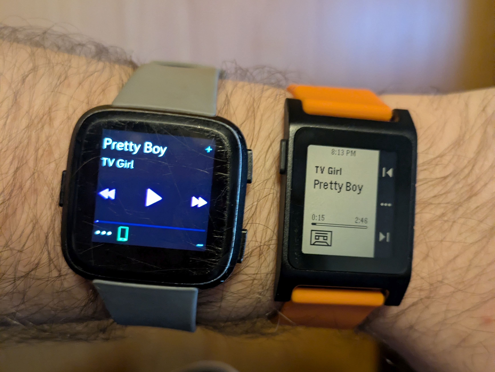
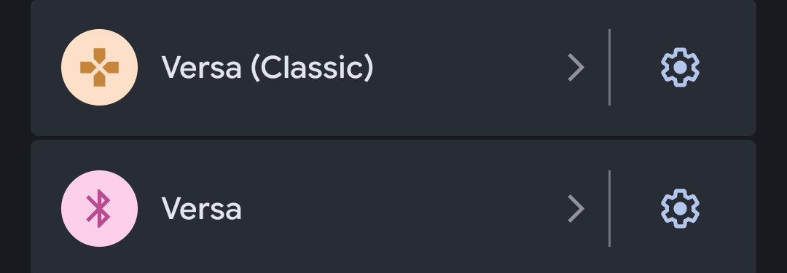
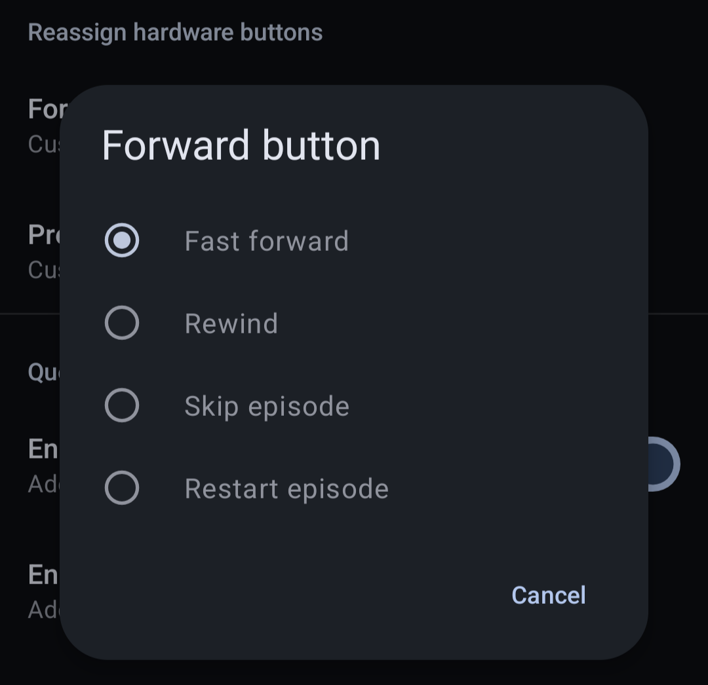
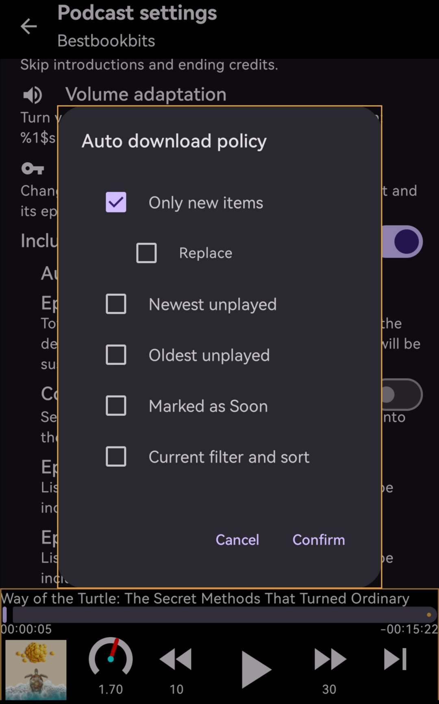

Heads up!
I started writing this like half a year ago and then fogor completely about it until the Pebble Time 2 showed up at my doorstep. So uh, if some language sounds like I'm dredging up really old shit, I am! Whoops.
I was lucky enough to be one of the people who got the chance to purchase the Pebble 2 Duo, a hardware refresh of the original Pebble 2 devices. I'm a newcomer to Pebble, having missed out on smart watches almost entirely during their nascency on account of the awful real life debuff known as "being in high school and not having a source of income."
Prior to owning the 2 Duo I had been a long time user of the Fitbit Versa 1 which has not only served me dutifully but still works well even today - I was really only in the market for a new watch because my Versa's face is all scuffed up! I was used to using my Versa for three things primarily: Checking notifications, setting alarms, and controlling music. If the Pebble 2 Duo could accomplish all that, I'd be happy.

I was especially used to using the backwards/forwards buttons on the Versa to fast forward and rewind podcasts. In music apps, these buttons are coded to skip tracks, while in podcasts they skip ahead or back a few seconds, usually based on user preference. So, without thinking, I was listening to a podcast when I missed a line. I dutifully pressed the backwards button on my new Pebble 2 Duo... And the podcast episode restarted from the beginning.
Uh oh.
What's Going On Here?
A quick search of the web will elucidate how media controls work on Android devices - keycodes. Just like those fancy media keys on your keyboard for pausing, playing, skipping, and changing volume, Android listens to these keycodes to control the currently playing media on your phone.
Android is open source, so we can simply pop open a list of these keycodes and look at them. In fact, we can hop down to line 248 and see all the media keys in order.
/** Play/Pause media key. */
AKEYCODE_MEDIA_PLAY_PAUSE= 85,
/** Stop media key. */
AKEYCODE_MEDIA_STOP = 86,
/** Play Next media key. */
AKEYCODE_MEDIA_NEXT = 87,
/** Play Previous media key. */
AKEYCODE_MEDIA_PREVIOUS = 88,
/** Rewind media key. */
AKEYCODE_MEDIA_REWIND = 89,
/** Fast Forward media key. */
AKEYCODE_MEDIA_FAST_FORWARD = 90,Looking at this we can easily infer how the system works. The Fitbit Versa's media controls actually communicate directly to the phone via what it calls "Bluetooth Classic" (versus the "Bluetooth Low Energy" standard). Therefore, the Versa is actually connected twice to your phone: once through the LE connection to sync notifications, phone app data, and so on, and once through the "Classic" connection to do the remote. In fact, in the Bluetooth interface on my Pixel phone, you can see that while the LE Versa connection has a generic Bluetooth icon, the "Classic" interface has a little controller icon.

This icon is usually used for remote controls, presentation devices, game controllers, and - yes - even keyboards and mice.
We can kind of figure out what's going on here, now. To add media control support to the device, the Fitbit Versa is masquerading as a keyboard, and when you press a button in the control interface, it sends a media key press event to the Android. So which keys are being pressed on the Versa compared to the Pebble 2 Duo?
Apparently this is also a problem specific to my podcast app of choice, the open source Podcini. Most podcast apps allow you to control what happens when you press fast forward, rewind, or skip, since skipping an entire podcast is a very uncommon choice. Popping open Podcini's settings reveals a section where I can determine what the fast forward button does, and how many seconds it fast forwards or rewinds.

Aha, but note that it specifies "Fast forward"! Taking a look at that table of keycodes again shows that "Next" and "Previous" are options in addition to "Fast Forward" and "Rewind". Since I'm not experiencing this issue on my Versa, we can assume that the versa is sending AKEYCODE_MEDIA_FAST_FORWARD while the Pebble 2 Duo is likely sending AKEYCODE_MEDIA_NEXT, the next track key.
Let's Crack It Open
Part of the selling point of the Pebble devices for me was their "hackability", as I was told. There's something enticing about being able to look into how a device works and potentially fix any issues myself rather than waiting for an upstream fix.
In the leadup to the eventual hardware rerelease, Core Devices secured a deal with then-owners of the Pebble codebase and license, Google, to open source the firmware running on the devices. Core Devices now hosts their own fork of the Pebble firmware, in addition to a further promise to open source other parts of the Pebble ecosystem in order to allow open source projects to pick up the slack should the business running the show ever go under again.
of the Pebble firmware, in addition to a further promise to open source other parts of the Pebble ecosystem in order to allow open source projects to pick up the slack should the business running the show ever go under again.
If your first instinct was to check /src/apps for the source to the music app, you'd be forgiven for being wrong - This folder actually includes sample source code for Pebble apps to show off cool functions of the hardware and software. Pebble's native music controls function is built right into the firmware rather than being a separate app like the Calendar function. Therefore, we need to dig deeper into /src/fw/apps/system_apps/. There, you'll find music_app.c and music_app.h.
A quick CTRL+F for next will find this function:
static void prv_skip_click_handler(ClickRecognizerRef recognizer, void *context) {
// no animations on tintin
Animation *animation = prv_create_cassette_animation(context);
animation_schedule(animation);
if (click_recognizer_get_button_id(recognizer) == BUTTON_BACKWARD) {
music_command_send(MusicCommandPreviousTrack);
} else {
music_command_send(MusicCommandNextTrack);
}
}
All in one neat little method! We can easily glean even with very little C knowledge that this function must be called when either of the two skip buttons is pressed, and then decides in the moment which one is forwards and which is backwards, before sending the proper music command to the phone. And if I were a betting man, I'd say those variables being passed into music_command_send look an awfully lot like enums.
Using any IDE (or Github itself) lets us hunt down the source for these symbols. Sure enough, /src/fw/services/normal/music.h has a list of all possible commands to get sent to the watch.
typedef enum {
MusicCommandPlay,
MusicCommandPause,
MusicCommandTogglePlayPause,
MusicCommandNextTrack,
MusicCommandPreviousTrack,
MusicCommandVolumeUp,
MusicCommandVolumeDown,
MusicCommandAdvanceRepeatMode,
MusicCommandAdvanceShuffleMode,
MusicCommandSkipForward,
MusicCommandSkipBackward,
MusicCommandLike,
MusicCommandDislike,
MusicCommandBookmark,
NumMusicCommand,
} MusicCommand;
There we go! MusicCommandSkipForward and MusicCommandSkipBackward sounds just like what we're looking for. Our next steps should be straightforward then: follow the docs to download the source code, swap out the Track commands with the equivalent Skip commands, and build.
The docs strangely only provide information for flashing to a watch directly using a firmware dev kit which is... scary. And expensive.

You do not have to do that.
Open the Pebble app, go to the settings, and tick the box for "Show debug options". A "Firmware Update Debug" option will appear in the Devices menu under your watch, where you can load your custom build. Official FW builds come through the Core Devices Github, so it's trivial to sideload your way back to stock.
After creating your custom firmware and loading it onto the watch, it's only natural that you'd want to fire up your podcast of choice or play some music on your favorite app, and press the fast forward key to see what happens. You will immediately find out that the buttons are now completely nonfunctional.
Uh oh.
Opening the Black Box
Before we continue this journey I want to give a huge shout-out to both the members of the Rebble Discord and the guys over at Core devices. They were going through a little bit of a spat but they're both people who are passionate about their hardware and they want what's best for each other - and I think with continued discussion things are going to work out in the end for both of them.[1] Both sides were absolutely wonderful to talk to and work with and extremely open and friendly with owners of Pebble devices both new and old.
I hopped in to originally ask for questions on how to find that firmware update button (my silly ass thought it wouldn't be hidden behind a "if you tick this you have a chance to brick your device" box) but it was also helpful to ask questions about how the actual Pebble OS communicates with the phone.
If you've been following along, you might have been asking the nagging question "But if the Versa needs to use normal Bluetooth to skip music tracks by posing as a keyboard on Android, how does the Pebble 2/2 Duo get away with using only Bluetooth LE for all commands?" Well, on iOS you can just do that because Apple's whole business is having contingencies and APIs for everything. On Android meanwhile, you need to get a little sneaky with it: Music commands aren't sent to the phone directly on the Pebble 2/2 Duo, they're sent to the Pebble App, which then submits them on your behalf.
If we follow the symbol trail for the function music_command_send rather than the enum MusicCommand, you'll eventually end up in /src/fw/services/normal/music_internal.h and /src/fw/comm/ble/kernel_le_client/ams/ams.c with some pretty elucidating code and comments.
////////////////////////////////////////////////////////////////////////////////////////////////////
// Interface to music metadata server (Pebble Protocol, AMS, ...)
//! Bits in the bitset of optional features of a server
typedef enum {
MusicServerCapabilityNone = 0,
MusicServerCapabilityPlaybackStateReporting = (1 << 0),
MusicServerCapabilityProgressReporting = (1 << 1),
MusicServerCapabilityVolumeReporting = (1 << 2),
} MusicServerCapability;
//! Pointers to server-specific implementations of the music backend server
typedef struct {
const char *debug_name;
bool (*is_command_supported)(MusicCommand command);
void (*command_send)(MusicCommand command);
bool (*needs_user_to_start_playback_on_phone)(void);
MusicServerCapability (*get_capability_bitset)(void);
void (*request_reduced_latency)(bool reduced_latency);
void (*request_low_latency_for_period)(uint32_t period_ms);
} MusicServerImplementation;
AMS is technically the name of the company that develops the blood oxygen meter lights on the bottom of fitness trackers and smart watches like on the Pebble 2 Duo and the Fitbit Versa, but in this instance it's more likely it stands for Android Media Server.
So problem solved. The Pebble app probably just doesn't have the "Fast Forward" and "Rewind" keycodes hooked up properly because they were never used as a feature. In order to add this feature, then, you'd need to use an app that supports the Pebble app protocol like Micropebble and add the keycode support yourself.
Or you could just submit a pull request right to the Pebble app Github page- wait, what the hell?
Yep! Turns out as I was talking to Rebble Alliance members about how this problem could be solved an employee at Core Devices/Pebble showed up to let us know that, as a part of their olive branching towards the Rebble community, they were open sourcing their mobile app to further reduce reliance on central servers for updates and support.
This would, of course, require me to learn Kotlin, the language the Pebble app is developed in, but that would be a project for the near future. Instead, I realized I'd been going about the issue the wrong way: "I should be checking out the app I'd been using, not the hardware!" In the interest of feature parity, I figured I should submit a pull request or issue to the developers of Podcini. Surely they'd like to know the average use case for "Skip track" button behavior on Bluetooth connected devices, and provide equivalent capabilities for all its users across all hardware.
Hop into the Apps section of your Android settings app, pick Podcini, scroll down to where it says "Installed from F-Droid", tap it, and find that F-Droid dumps you to a 404 page because your podcast app is fucking gone.
Uh oh.
Ok, NOW What's Going On?!?!
So turns out, my version of Podcini was also a full year out of date.
What had been bugging me while asking for help on the Rebble Discord was that I was not only the first person to have this problem, but the only person to have this problem. Apparently people had been fast forwarding and rewinding through their Podcasts with no issue on their Pebbles - even on the original Pebble 2s. Why was I so special?
I was on Podcini version 5.5.2, while the most recent version was 9.1.0, released... twenty two minutes after I started this quest? What the hell? What happened?
Between Podcini 5.5.2 and 6.0 there was a major rewrite to be planned to replace Podcini on F-Droid. For some reason, however, this had to be published on F-Droid under the new name Podcini.R, which likely was due to some change in the app's UUID or something idk I'm not an Android developer.
So that means anyone who saw the update post on F-Droid that said "Hey, just so you know, Version 6.0 is a big ol' rewrite, so be aware that while the prerelease versions are up, if you want the stable that'll be dropped in on top at a later date" and decided to wait for the inevitable stable version (like me) never got the update. Instead the updates just stopped coming and the original Podcini was quietly delisted from F-Droid. Since your ideal podcast is a very simple, stable protocol of RSS feeds delivering audio files, I was none the wiser that I was using a super duper out of date client - especially with how polished Podcini was already!
But then, things get even WEIRDER. Podcini.R, later succeeded by Podcini.X is... bad! it's probably the worst podcast app I've ever used.
Everything is way too cluttered together, gross thick borders are all over everything, and tap targets are either too close or too small. Hell, the pause button isn't even aligned with the other icons anymore! There's no dedicated interface for viewing all your downloads at once anymore, importing my old subscriptions broke the entire interface until I deleted all of them - which then crashed the entire app because it tried to iterate through an empty list. I had to start over all my podcast subscriptions from scratch. Filters get randomly applied as you go through the app, synthetic podcasts (subscriptions generated from a folder of episodes) now have a very cringeworthy author title of "Yours Truly" that you can't change, and I couldn't figure out how to actually add episodes to the synthetic podcast.
And what's worse, the borders thing is definitely an intentional design and not a bug, because you can see in screenshots on the Podcini.X README.MD that they are proudly displaying a modal box with an outline that DOESN'T EVEN MATCH THE ROUNDED CORNERS OF THE MODAL

I'm never using this app again. This sucks.
I only grabbed Podcini because I had assumed Antennapod - the application it was based on - wasn't getting updates. After all, Podcini showed up in the featured section of F-Droid so it must be better right?
But, uh, Antennapod sure is still getting updates, and is far more polished than Podcini! Turns out that Podcini only exists because Antennapod was slow on feature updates - which isn't really a problem for a casual user.
Whoops!
Switched back to Antennapod and didn't look back.
Conclusion
"Does that mean none of this was worth it?" you may ask. "Did Antennapod also have this issue since Podcini was based on it, or was this all just a waste of time?"
Yeah, Antennapod correctly jumps podcasts forward and backward using the skip buttons on the Pebble 2 Duo.
AAAAAAAAAAAAAAAAAAAAAAAAAAAAAAAAAAARGH.
This was written closer to January of this year (2026), so I'm happy to say it absolutely worked out! The Pebble app has a robust repository system now similar to Linux distros, and both Pebble and Rebble are still seeing apps submitted by developers. Truly a win for open source technology!↩︎